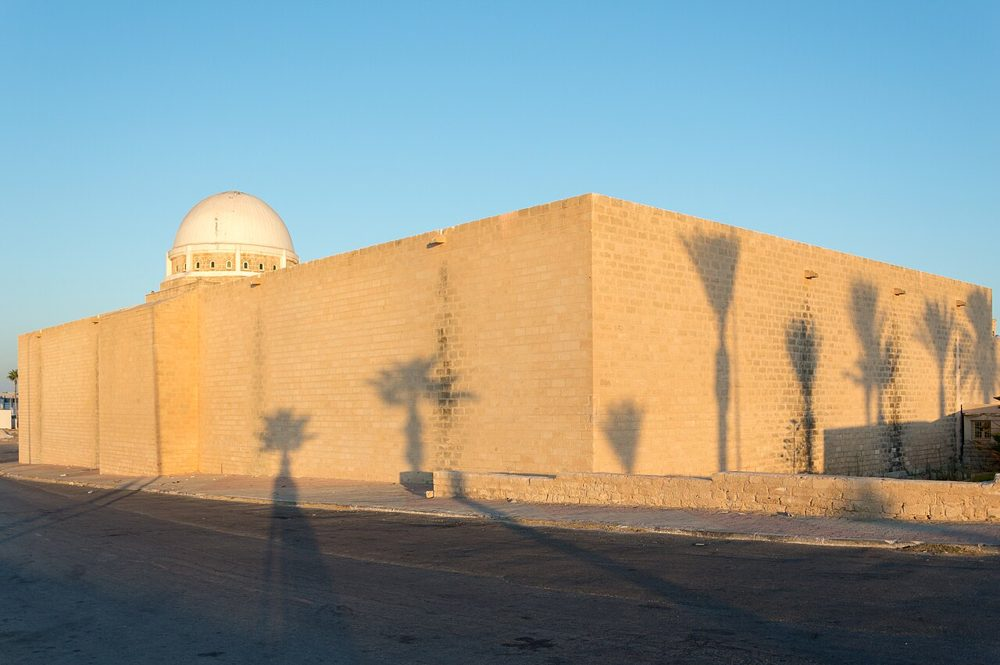
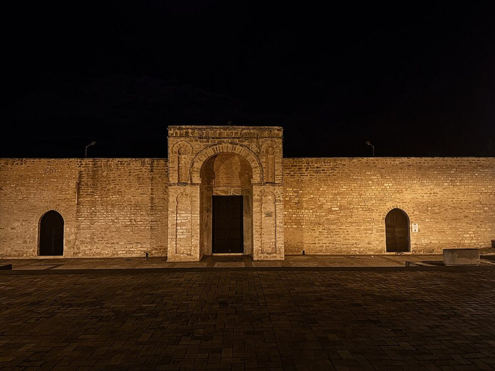

تعارف
پہلے فاطمی خلیفہ نے 916ء میں اپنے نئے دارالحکومت میں سمندر کے کنارے اسے تعمیر کیا۔ فتح کی محرابوں سے متاثر اس کا آگے نکلا ہوا بڑا دروازہ مساجد کے فنِ تعمیر میں ایک نئی چیز تھا۔
تصاویر


تاریخ
جب عبید اللہ المہدی نے 909ء میں مہدیہ کی بنیاد رکھی تو اس نے خلافت کے محل کے قریب، سمندر سے حاصل کیے گئے ایک چبوترے پر مسجد بنوائی۔ 1554ء میں ہسپانویوں کے ہاتھوں شہر کی تباہی کے بعد عمارت میں بارہا تبدیلیاں ہوئیں۔ 1961ء سے 1965ء کے درمیان اسے دسویں صدی کے نقشے کے مطابق تقریباً پوری طرح ازسرنو تعمیر کیا گیا؛ بڑا دروازہ اور شمالی دالان اصل ہیں۔
فنِ تعمیر
تقریباً 85 × 55 میٹر کا موٹی دیواروں والا چوکور، جس کے دونوں طرف دو مربع برج ہیں جو بارش کے پانی کے حوض تھے۔ مسجد کا کبھی مینار نہیں رہا۔ عظیم الشان دروازہ محراب کی طرف ایک "راہِ اعزاز" کھولتا تھا، جو 9 راہداریوں والے ہال کے آخر میں ہے اور جس کی بلند درمیانی راہداری ایک گنبد تک جاتی ہے۔
اہم تاریخیں
- 909عبید اللہ المہدی کے ہاتھوں مہدیہ کی بنیاد
- 916جامع مسجد کی تعمیر
- 1554ہسپانویوں کے ہاتھوں شہر کی تباہی
- 1961اصل نقشے کے مطابق تعمیر نو (1961-1965)
زیارت
یہ سب سے پہلے نماز کی جگہ ہے: مناسب لباس پہنیں، نماز کے ہال میں داخل ہونے کے لیے جوتے اتاریں اور نماز کے اوقات سے بچیں۔ کئی بڑی مساجد میں غیر مسلم زائرین صحن میں جا سکتے ہیں، نماز کے ہال میں نہیں۔ اوقات بدلتے رہتے ہیں: موقع پر معلوم کریں۔
نقشے پر
دستاویزات اور لنکس
ماخذ
- تحریریں "تیونس کی مساجد" نے اوپر دی گئی دستاویزات (ویکیپیڈیا، قنطرہ، Discover Islamic Art، یونیسکو) کی بنیاد پر لکھیں، 09/10/2026 کو جانچی گئیں۔
- Wikidata : Q3609224 (CC0)
- تصاویر: وکیمیڈیا کامنز، ہر تصویر کے نیچے مصنف اور لائسنس۔
- مقام: OpenStreetMap (ODbL) اور وکی ڈیٹا۔